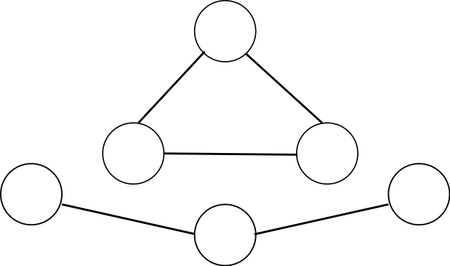

The clustering coefficient describes the tendency of nodes to create tightly knit groups or cliques within a network. It is based on the number of connected triplets of nodes in the network. The metric is of global scope and was proposed by Smith et al. (2009), Hacker et al. (2015) and Viol et al. (2016). Technically it can also be calculated for local nodes as described by Wasserman et al. (1994). Due to the above authors only mentioning the global variant, this is ignored at this point. Its calculation is based on Wasserman et al. (1994).
A closed triplet is three nodes $i, j, k$, which are connected in the form: $$ i - j, \quad j - k \quad and \quad k - i. $$
The direction of the edges are irrelevant for the triplet. A connected triplet is three nodes connected in an arbitrary form. The difference is illustrated in the figure below. On the top is the closed triplet and the bottom shows the triangle.

(from Wikimedia, accessed 2017-01-17)
For the calculation of the clustering coefficient the number of closed triplets is divided by the number of connected triplets: $$ clustering = \frac{closed\ triplet}{connected\ triplets} $$
Smith et al. (2009) relate a high clustering coefficient to engaging users, who like to participate in discussions. However, Hacker et al. (2015) narrows this interpretation and adds that this engagement is limited to specific topical interests. Viol et al. (2016) calls this type of user a niche expert, who has a tendency to interact with people from his groups, but not with people from other groups.
Thus a high value shows the existence of subgroups in the network. While they can be very cohesive within, these subgroups are able to oppose other subgroups or the general norms of the network. While Bonding Social Capital is based on strong ties and cohesive groups, it can also facilitate subcultures (Portes, 1998) that stand orthogonal to the main culture (Hatch, 2012). This fragmentation can lead to a decrease in productivity as a shared understanding between subgroups is lacking. A low clustering coefficient indicates a homogeneous network, with low fragmentation. This is beneficial for effective cooperation in the network.
{kind=link}